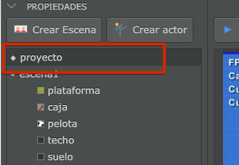
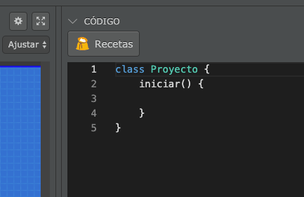
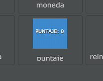
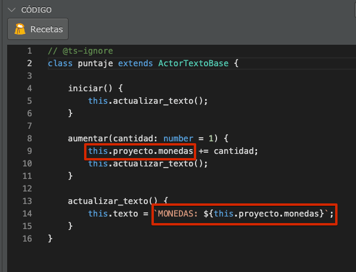
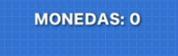
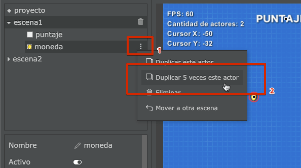
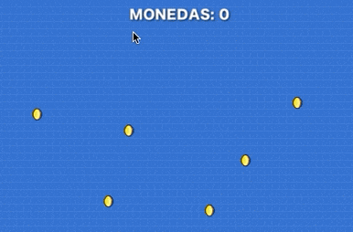
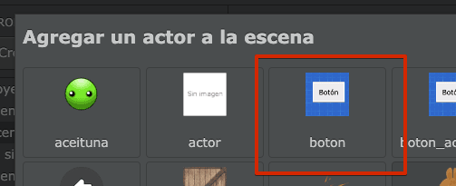

У проєкті сцени і актори маєть власний, асоційований з ними, код.
У деяких ситуаціях нам потрібно мати можливість зберігати змінні в якомусь загальному місці, яке існує за межами акторів і поточної сцени. Наприклад, якщо ми хочемо зберігати кількість доступних життів актора, коли він переходить від однієї сцени до іншої.
Щоб продемонструвати, як ми можемо використовувати код проєкту, розглянемо приклад, у якому ми повинні збирати монети за допомогою миші за умови, що кількість монет не буде змінюватися між рівнями.
Спочатку ми повинні вибрати назву "Проєкт" на панелі властивостей:

Потім ми побачимо, що код проєкту з’являється на панелі коду:

Код майже порожній, тому давайте створимо лічильник зібраних монет і надамо йому початкове значення:
Тепер ми збираємося створити актора, щоб "відобразити" цей лічильник прямо на екрані.
Натисніть кнопку "Створити актора", а потім виберіть актора "puntaje":

Тепер давайте відредагуємо код, щоб цей актор міг отримати доступ до змінної "puntaje" проєкту. Ми повинні змінити ці рядки коду:

Зверніть увагу, що з коду актора ми можемо отримати прямий доступ до проєкту за допомогою коду this.proyecto, і, звичайно, ми зможемо отримати доступ до всіх змінних або методів проекту.
Повний код буде виглядати так:
// @ts-ignore
class puntaje extends ActorTextoBase {
iniciar() {
this.actualizar_texto();
}
aumentar(cantidad: number = 1) {
this.proyecto.monedas += cantidad;
this.actualizar_texto();
}
actualizar_texto() {
this.texto = `МОНЕТИ: ${this.proyecto.monedas}`;
}
}Коли ми запускаємо гру, вона має виглядати так:

Тепер створіть актора типу "moneda" (монета) з цим кодом:
// @ts-ignore
class moneda extends Actor {
cuando_hace_click() {
this.proyecto.monedas += 1;
this.eliminar();
}
}а потім скопіюйте цього актора 5 разів за допомогою меню:

Якщо ви запустите проєкт, ви побачите, як лічильник монет зберігає та відображає змінну monedas безпосередньо з проекту:

Найцікавішим у збереженні змінних у проєкті є те, що вони збережуть своє значення, навіть якщо ми переходимо з однієї сцени на іншу.
Давайте протестуємо: натисніть кнопку "Створити сцену" і в код сцени вставте цей код, щоб користувач бачив кількість монет, коли він заходить на цю сцену:
Потім у головній сцені натисніть кнопку "Створити актора", щоб створити актора типу "botón" (кнопка):

І, нарешті, змініть код цього актора, щоб можна було переходити до наступної сцени після натискання:
// @ts-ignore
class boton extends ActorTextoBase {
cuando_hace_click() {
this.pilas.cambiar_escena("escena2");
}
}Хоча цей приклад дуже простий, він є відправною точкою для того, щоб мати можливість доступу до даних гравця протягом усієї гри.
Перегляньте проєкт "mantener-valores-entre-escenas" у розділі Приклади, щоб ви могли побачити, як можна покращити проєкт, який ми виконували у цьому розділі.